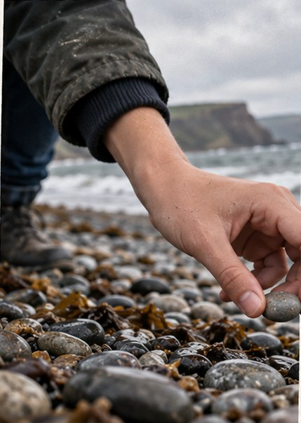
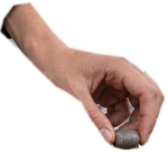
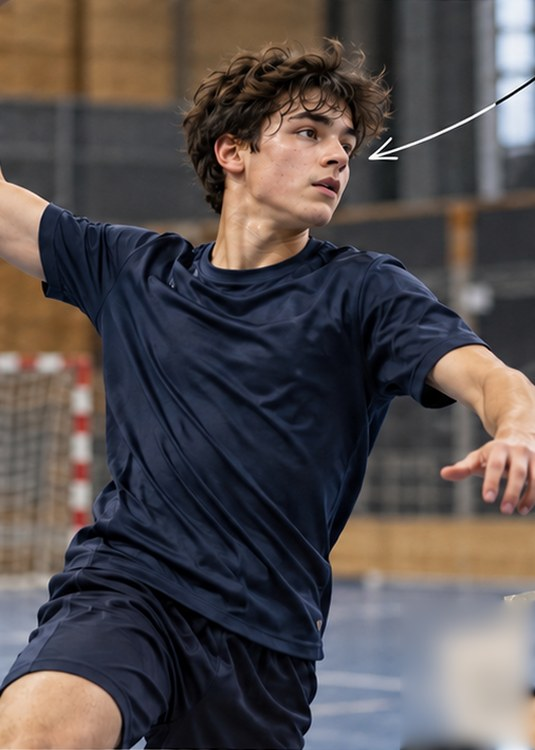
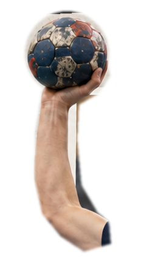

SCENE_01_photo_nousphoto à venir
New York | été 2025
Montréal | été 2025
et là, je leur
parle du rêve...


300 km
St Bees | mer d’Irlande
Robin Hood’s Bay | mer du Nord
▶SCENE_04_interviewextrait vidéo 16:9
Entre le rêve et l’accomplissement, il y a une date.
40 ans
pas de mourir trop jeune.
l’année prochaine, je pars.


RAFA | 15 ANS
HANDBALL | MONTRÉAL + QUÉBEC
tout le monde : jours
nous : moins de 10